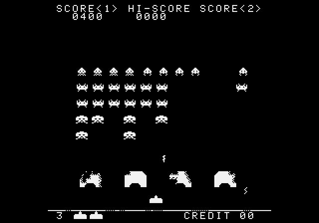
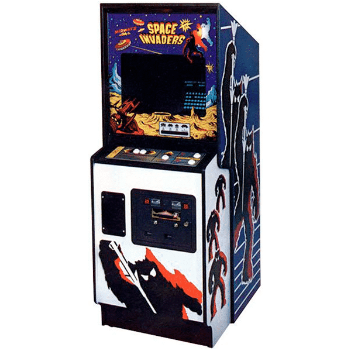
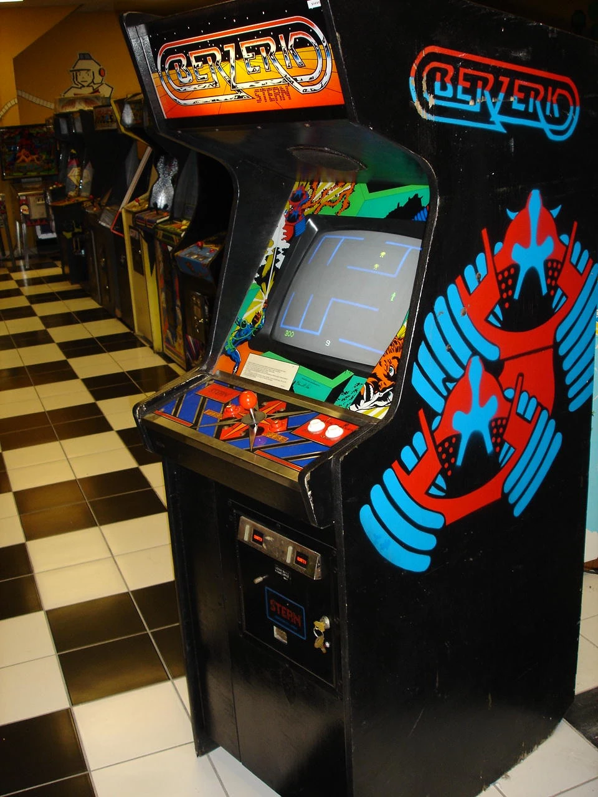
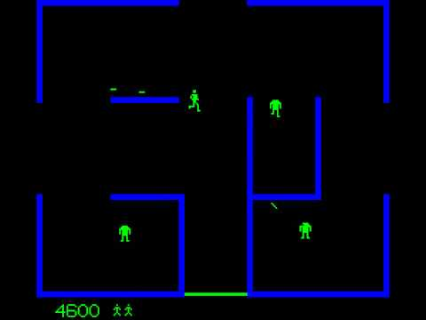

← Click For Info
When and What was the Golden Era?
The age of Pixel Gold.
The Golden Age of video games, spanning roughly from the late 1970s to the mid-1980s, is a cherished and transformative era in the history of gaming. It represents a pivotal time when video games evolved from experimental novelties into a mainstream entertainment medium, laying the foundation for the vibrant industry we know today.
At the heart of this golden era were the thriving arcades that seemed to pop up on every street corner. Iconic titles like Pac-Man, Space Invaders, Donkey Kong, and Frogger became household names, attracting players of all ages to darkened rooms filled with the glow of pixelated screens and the cacophony of electronic sounds. Arcades became social hubs, where gamers honed their skills, competed for high scores, and reveled in the shared experience of gaming.
The home console market also came into its own during this period, with the release of the Atari 2600 in 1977. Suddenly, families could bring the arcade experience home. Games like Pong, Asteroids, and Missile Command captured the imagination of a generation and transformed gaming into a household pastime. This marked a significant shift, as video games transitioned from coin-operated amusements to a more accessible and personal form of entertainment.
However, the Golden Age of video games was not without its challenges. The video game market became saturated with poorly designed and hastily developed games, leading to the Video Game Crash of 1983. Overhyped and underwhelming titles, coupled with an oversaturated market, caused a temporary downturn in the industry's fortunes.
Nonetheless, this period laid the groundwork for the gaming renaissance that followed. It introduced key concepts like high scores, competitive gaming, and the thrill of arcade challenges, fostering a passionate gaming culture. The industry learned valuable lessons from the crash, leading to quality control improvements, stricter licensing practices, and the resurgence of Nintendo with the Nintendo Entertainment System (NES). Let's discuss a few shall we?
At the heart of this golden era were the thriving arcades that seemed to pop up on every street corner. Iconic titles like Pac-Man, Space Invaders, Donkey Kong, and Frogger became household names, attracting players of all ages to darkened rooms filled with the glow of pixelated screens and the cacophony of electronic sounds. Arcades became social hubs, where gamers honed their skills, competed for high scores, and reveled in the shared experience of gaming.
The home console market also came into its own during this period, with the release of the Atari 2600 in 1977. Suddenly, families could bring the arcade experience home. Games like Pong, Asteroids, and Missile Command captured the imagination of a generation and transformed gaming into a household pastime. This marked a significant shift, as video games transitioned from coin-operated amusements to a more accessible and personal form of entertainment.
However, the Golden Age of video games was not without its challenges. The video game market became saturated with poorly designed and hastily developed games, leading to the Video Game Crash of 1983. Overhyped and underwhelming titles, coupled with an oversaturated market, caused a temporary downturn in the industry's fortunes.
Nonetheless, this period laid the groundwork for the gaming renaissance that followed. It introduced key concepts like high scores, competitive gaming, and the thrill of arcade challenges, fostering a passionate gaming culture. The industry learned valuable lessons from the crash, leading to quality control improvements, stricter licensing practices, and the resurgence of Nintendo with the Nintendo Entertainment System (NES). Let's discuss a few shall we?
Pac-Man.

Pac-Man, an iconic symbol of the Golden Age of video games, burst onto the scene in 1980 as a revolutionary arcade title created by Toru Iwatani for Namco. It introduced players to a simple yet endlessly captivating concept: guiding the titular character, Pac-Man, through a maze while devouring dots and avoiding colorful ghosts. This deceptively straightforward gameplay, coupled with an adorable, pizza-shaped protagonist, instantly charmed players of all ages and backgrounds.
Pac-Man's appeal extended beyond its gameplay mechanics. It transcended cultural boundaries and became a pop culture phenomenon, with its distinctive characters and recognizable "wakka-wakka" sound effects becoming synonymous with gaming itself. The game's success led to a plethora of merchandise, including toys, clothing, and even an animated television series.
What truly set Pac-Man apart was its universal appeal. It attracted a broad audience that included both casual players and dedicated gamers, transcending the typical gaming demographics of the time. Pac-Man's popularity among women, in particular, was a testament to its broad reach.
The game's enduring legacy is evident in its continued presence in the modern gaming landscape. Pac-Man has inspired countless sequels, spin-offs, and adaptations, maintaining its relevance across generations. It remains a symbol of timeless, uncomplicated fun, and its iconic design and gameplay continue to evoke feelings of nostalgia and joy in players today. Pac-Man is not merely a game; it's a cultural touchstone that reminds us of the profound and enduring impact that video games can have on our lives and the broader world of entertainment.
The image is a normal pac-man game screen. The audio snippet is a small portion of pac-man's theme.
Space Invaders.


Space Invaders, released in 1978 by Taito, stands as a pioneer in the world of video games, marking a pivotal moment in the medium's history. Developed by Tomohiro Nishikado, this arcade classic introduced players to the concept of defending Earth from an alien invasion, utilizing a movable laser cannon to shoot down descending rows of extraterrestrial adversaries.
The game's simple yet addictive gameplay struck a chord with players and ignited the arcade gaming craze of the late 1970s and early 1980s. Space Invaders challenged players' reflexes, precision, and strategic thinking as they aimed to eliminate wave after wave of relentless foes. The growing speed and intensity of the invading alien hordes created an escalating sense of tension, and the infamous "heartbeat" sound effect quickened as the aliens closed in, adding to the game's immersive atmosphere.
Space Invaders not only became a commercial juggernaut but also a cultural phenomenon, ingrained in the collective memory of the gaming world. It introduced the concept of high scores, encouraging players to compete for the top spot on the leaderboard, and it played a significant role in the birth of competitive gaming culture.
The game's influence extended far beyond the arcade, inspiring numerous adaptations, spin-offs, and sequels across various gaming platforms and media. Space Invaders remains an enduring symbol of video game history, a testament to the power of simplicity, and a reminder of the profound impact that a single game can have on popular culture and the evolution of gaming as an art form..
Images- The machine that ran the game covered with art from the poster. Also a gamescreen from the game itself.
Berzerk.


Berzerk, a classic arcade game unleashed by Stern Electronics in 1980, stands as a significant milestone in gaming history. It's celebrated as one of the earliest and most influential examples of maze-shooting gameplay, leaving an indelible mark on the arcade gaming landscape. Players step into a futuristic world filled with electrified mazes, facing off against relentless robotic adversaries while striving to survive and accumulate points.
What sets Berzerk apart is not just its innovative gameplay but also its pioneering use of synthesized voice effects. The game featured a talking adversary—an eerie, monotone voice that taunted players with phrases like "Intruder alert!" and "The humanoid must not escape!" This voice added an immersive and futuristic element, enhancing the overall gaming experience and making it one of the first games to incorporate speech.
Berzerk's appeal lies in its minimalist design and intense action. The game's simplicity belied its addictive nature, drawing players in with the challenge of navigating mazes while battling a relentless onslaught of robots. Each level offered a new maze layout, increasing in complexity as players progressed, keeping them engaged and coming back for more.
This arcade gem played a pivotal role in shaping the maze-shooter genre, setting the stage for future classics like Robotron: 2084 and Smash TV. Berzerk's legacy serves as a nostalgic reminder of the early days of arcade gaming when innovation and imagination reigned supreme. It continues to hold a special place in the hearts of gamers, immortalizing the simple yet thrilling gameplay that defined a bygone era of gaming.
Images- The bezerk arcade cabinet (left). A frame from a berzerk longplay showing its mechanics.
The Video Game Crash of 1983.
The Video Game Crash of 1983 marked a turbulent period in the history of the gaming industry, characterized by a sudden and severe downturn in the market. Several factors converged to create this crisis, leading to a substantial decline in the popularity and profitability of video games.
One significant contributor to the crash was the oversaturation of the market with low-quality games. The flood of subpar titles, coupled with a lack of quality control, left consumers disillusioned and frustrated. Many gamers grew wary of investing in new titles due to the high likelihood of disappointment, causing a decline in sales and consumer confidence.
Additionally, the exponential growth of home computers, such as the Commodore 64 and Atari 400/800 series, provided alternative gaming experiences that challenged the dominance of video game consoles. The availability of cheaper and more versatile home computers offered a broader range of applications beyond gaming, further eroding the appeal of dedicated gaming consoles.
Economic factors also played a role, with the recession of the early 1980s affecting consumer spending habits. High unemployment rates and inflation diminished disposable income, making expensive video game consoles and cartridges less attractive to potential buyers.
The crash had widespread ramifications, leading to the bankruptcy of several prominent video game companies and the closure of numerous arcades. It wasn't until the resurgence of the industry in the mid-1980s, primarily fueled by Nintendo's introduction of the Nintendo Entertainment System (NES) and its rigorous quality control measures, that the video game market regained its footing and embarked on a path of sustained growth.
The Video Game Crash of 1983 serves as a cautionary tale in the gaming industry's history, highlighting the importance of quality control, innovation, and consumer trust in maintaining a healthy and thriving market.